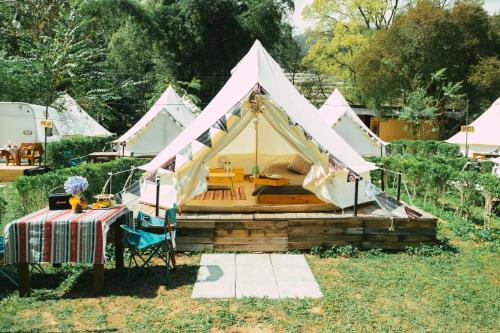

ที่พักรอบดอยอินทนนท์
เนื่องจากดอยอินทนนท์อยู่ไกลจากตัวเมืองเชียงใหม่ ผู้ที่ต้องการชมพระอาทิตย์ขึ้นหรือสัมผัสอากาศหนาวยามเช้าควรพักค้างคืนในบริเวณอำเภอจอมทองหรือใกล้ที่ทำการอุทยาน เพื่อลดเวลาเดินทางและได้สัมผัสบรรยากาศธรรมชาติได้นานขึ้น

🖼️รูปที่พัก/แคมป์ปิ้งใกล้ดอยอินทนนท์
ในเขตอุทยาน
บ้านพักและลานกางเต็นท์ของอุทยาน
บ้านพักและพื้นที่กางเต็นท์ที่ดูแลโดยอุทยานแห่งชาติ เหมาะสำหรับผู้ที่ต้องการตื่นเช้าชมพระอาทิตย์ขึ้นและสัมผัสอากาศหนาวอย่างใกล้ชิด ต้องจองล่วงหน้าโดยเฉพาะช่วงฤดูหนาว
รีสอร์ทธรรมชาติ
รีสอร์ทเชิงเขาอำเภอจอมทอง
รีสอร์ทท่ามกลางสวนผลไม้และทุ่งดอกไม้ บรรยากาศเงียบสงบ มักมีกิจกรรมเดินป่าหรือปั่นจักรยานชมธรรมชาติให้นักท่องเที่ยว
โฮมสเตย์ชุมชน
โฮมสเตย์หมู่บ้านชาวเขาขอบด้ง
พักกับชุมชนกะเหรี่ยงและม้งในบรรยากาศวิถีชีวิตท้องถิ่น ได้ลิ้มลองอาหารพื้นบ้านและเรียนรู้วัฒนธรรมชาวเขาอย่างใกล้ชิด